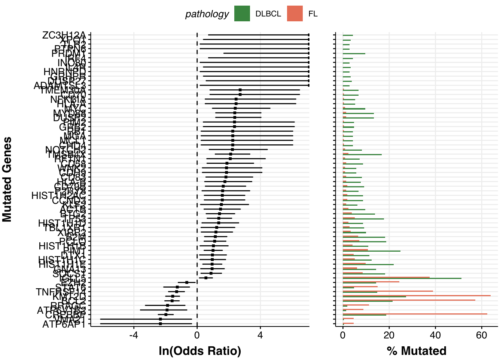

Reproducing figures from GAMBL papers
When preparing a manuscript for publication, it is important to maintain a visual identity throughout display items. With GAMBLR.viz, it is easy to keep up with a consistent theme, color pallette, fonts and font sizes.
This tutorial will demonstate how to regenerate figures from some of the manuscripts previously published by Morin Lab, in particular study by Dreval et al.
Prepare setup
We will first import the necessary packages:
Next, we will use the standard color pallette and store it in a variable for easy access:
colors <- get_gambl_colours()Finally, we will set the consistent GAMBLR-specific ggplot theme for this tutorial:
theme_set(theme_Morons())Differential gene expression between FL subgroups
The Figure 4A of the Dreval et al shows that there is a differential gene expression of CREBBP, FOXP1, and MYC between genetic subgroups of FL described in that paper. We can regenerate it here to confirm the published results and demonstate how easy it is to work with GAMBLR.viz.
# Get metadata
metadata <- get_gambl_metadata() %>%
filter(
study == "FL_Dreval",
pathology %in% c("FL", "DLBCL")
)Next, we can take advantage of the publicly available gene expression data and access it directly. The data is provided with the ENSEMBL identifiers, so we will need to make the conversion between human-readable and ENSEMBL identifiers. There is no need to search for this linkage as it is direcly available with GAMBLR family:
Now we can access the gene expression data and prepare it for plotting
# get gene expression
expression <- read_tsv(
"https://www.bcgsc.ca/downloads/morinlab/cFL_Blood_2023_GE.tsv.gz"
) %>%
filter(ensembl_gene_id %in% identifiers$ensembl_gene_id) %>%
# add human-readable identifiers
left_join(
identifiers,
.
)
expression <- expression %>%
# convert to long format
pivot_longer(
!c(ensembl_gene_id, gene_name),
names_to = "sample_id",
values_to = "expression"
) %>%
# add genetic metadata labels
left_join(
.,
metadata %>%
select(sample_id, pathology, genetic_subgroup)
) %>%
# prepare grouping label and set consistent level order
mutate(
comp_group = ifelse(
pathology == "DLBCL",
pathology,
genetic_subgroup
),
comp_group = factor(
comp_group,
levels = c("DLBCL", "dFL", "cFL")
)
) %>%
drop_na()Now we can perform statistical comparisons to find differences in gene expression:
pwc <- expression %>%
group_by(gene_name) %>%
rstatix::wilcox_test(
expression ~ comp_group
)
# Add coordinates for position of brackets
pwc <- pwc %>%
rstatix::add_xy_position(x = "comp_group")The Plot!
p <- expression %>%
ggplot(
aes(
x = comp_group,
y = expression,
color = comp_group
)
) +
geom_boxplot() +
geom_quasirandom() +
stat_pvalue_manual(
pwc,
hide.ns = TRUE,
size = 8,
label = "p.adj.signif"
) +
facet_grid(cols = vars(gene_name)) +
scale_color_manual(values = colors) +
ylab("Expression") +
theme(
axis.title.x = element_blank()
)
pDifferentially mutated genes between DLBCL and FL
The same paper by Dreval et al showed in the Supplemental Figure 1B the genes mutated at differential frequencies between FL and DLBCL. We can also easily regenerate that plot:
# First obtain maf data
maf <- get_ssm_by_samples(
these_samples_metadata = metadata,
tool_name = "publication"
)
# The Plot!
p <- prettyForestPlot(
maf = maf,
metadata = metadata,
comparison_column = "pathology",
comparison_values = c("DLBCL", "FL"),
max_q = 0.1,
genes = c(lymphoma_genes$Gene, "VMA21")
)
p$arranged
Patterns of mutations at common aSHM target sites
The study of FL by Dreval et al in the Supplemental Figure 4A demonstrated and important visualization of the patterns of mutations at common aSHM target sites across DLBCL and FL when comparing tumors in the discovery cohort. We can recapitulate that figure in this tutorial using the data bundled with GAMBLR and visualization functions available with GAMBLR.viz.
First, we will retreive the metadata exactly as it is provided in the paper:
# Read supplemental table from that paper
metadata <- read_xlsx(
system.file(
"extdata",
"studies/FL_Dreval.xlsx",
package = "GAMBLR.data"
)
)
# What is provided in the supplemental table?
colnames(metadata) [1] "Patient barcode" "Pairing status"
[3] "Genome sample id" "Normal sample id"
[5] "Sex" "Age at diagnosis"
[7] "Pathology" "FL grade"
[9] "Analysis cohort" "Tumor biopsy"
[11] "Reference" "MYC FISH BA"
[13] "BCL2 FISH BA" "BCL6 FISH BA"
[15] "MYC WGS Tx" "BCL2 WGS Tx"
[17] "BCL6 WGS Tx" "Tumor purity"
[19] "total N of SSM" "PGA"
[21] "Analysis" "cFL/dFL label"
[23] "SeqType" "AverageBaseQuality"
[25] "AverageInsertSize" "AverageReadLength"
[27] "PairsOnDiffCHR" "TotalReads"
[29] "TotalUniquelyMapped" "TotalUnmappedreads"
[31] "TotalDuplicatedreads" "ProportionReadsDuplicated"
[33] "ProportionReadsMapped" "MeanCorrectedCoverage"
[35] "ProportionCoverage10x" "ProportionCoverage30x"
# Select and rename columns that we need for heatmap
metadata <- metadata %>%
select(
sample_id = `Genome sample id`,
`Analysis cohort`,
"BCL2 Status" = `BCL2 WGS Tx`
) %>%
mutate(
# convert from boolean to character
`BCL2 Status` = ifelse(`BCL2 Status`, "POS", "NEG"),
# adding seq type for compatibility with plotting
seq_type = "genome"
)We also want to ensure the consistent ordering of the Analysis cohort as the annotation track associated with heatmap. By default, the values will be sorted alphabetically, but we will set the ordering more informed biologically by converting that column to a factor:
We will now also collect mutations for these samples:
maf <- get_ssm_by_samples(
these_samples_metadata = metadata,
tool_name = "publication"
)Now, we need a bed-formatted data frame with coordinates for the regions of interest. We will use the aSHM regions from GAMBLR, and will use the same version as was used in the original paper:
some_regions <- somatic_hypermutation_locations_GRCh37_v0.2 %>%
select(1:4) %>%
rename(
"chrom" = "chr_name",
"start" = "hg19_start",
"end" = "hg19_end",
"name" = "gene"
) %>%
mutate(chrom = str_remove(chrom, "chr"))
#set factor ordering for later
some_regions$name <- factor(
some_regions$name,
levels = sort(unique(some_regions$name))
)Now, we can plot the heatmap of mutations using the GAMBLR.viz function prettyMutationDensity:
ashm_heatmap <- prettyMutationDensity(
these_samples_metadata = metadata,
maf_data = maf,
cluster_samples = FALSE,
regions_bed = some_regions,
min_bin_recurrence = 10,
region_fontsize = 5,
window_size = 1000,
slide_by = 500,
orientation = "sample_columns",
sortByMetadataColumns = c("Analysis cohort", "BCL2 Status"),
metadataColumns = c("BCL2 Status", "Analysis cohort"),
backgroundColour = "white",
customColours = list(
"Analysis cohort" = get_gambl_colours(),
"BCL2 Status" = get_gambl_colours("clinical")
),
returnEverything = TRUE
)
ComplexHeatmap::draw(
ashm_heatmap$heatmap_object,
heatmap_legend_side = "bottom",
annotation_legend_side = "bottom"
)